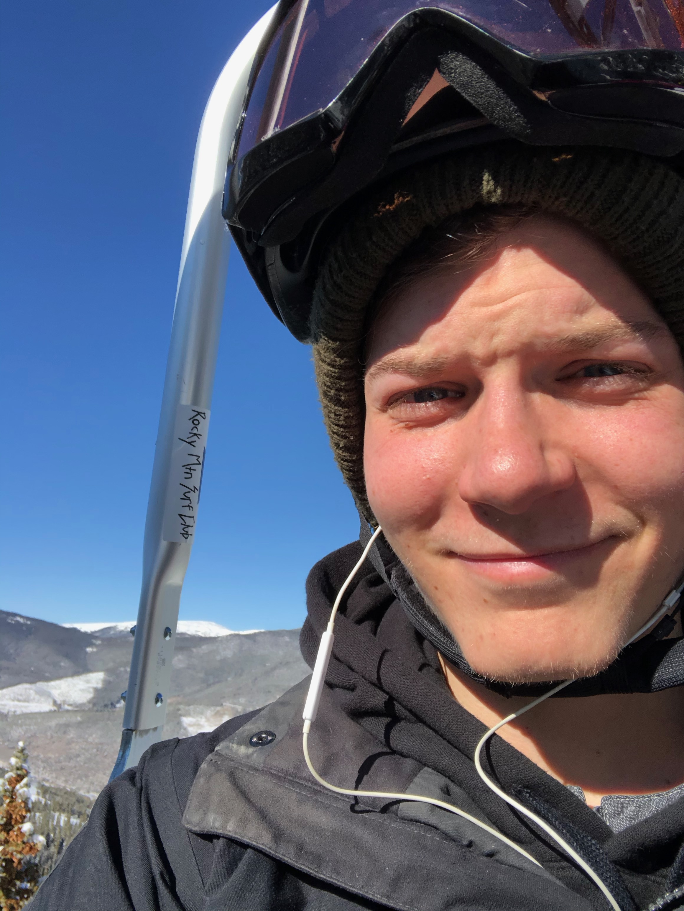

Hello! My name is Palmer Gill and this is my website! For those of you who don't know me, or if it has simply been awhile, let me begin with a little background on who I am. I grew up in a suburb of Chicago called Deerield, Illinois. I went to Deerfield High School (Go Warriors!), where my passion for science grew. I have also always been competetive and someone who enjoys physical activities, so I enjoyed playing volleyball throughout hischool. Directely After high school I went to Miami University in Oxford, Ohio, where I was directely admitted into their business school. After one year at Miami of Ohio, I realized I wasn't following my passions and decided to take a year away from school to reorient myself. During this time off I was able to get a job at an Apple store and reconnect with my passion for science and technology. With my passions in mind I decided to pursue a degree in Computer Science from The University of Colorado Boulder After starting in sales I was able to transition to a member of the technical support team (Genius Bar) and was promoted to Technical Expert. At the end of the Summer 2019 I left apple to focus on my final year of college. I have loved living in Boulder, from being able to hike in the summer, to skiiing in the winter, I have all the outdoor activities I could ever want. I am also very glad that I switched my major to computer science. I enjoy the challenge, the problem solving, the creativity, and the communuty that I have found in Computer Science and can't wait to continue my career in this field. So that is me, and my past 5 years or so fairly breifly. The highlights can all be found on my resume, which has its own page, and below you can learn about some more recent events in my life.
Fall 2019
4.0 GPA and Deans list for Second Semester in a row.

First time skiing in 19-20 season.
Spring 2019
Deans List at University of Colorado Boulder for the first time.